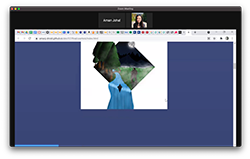
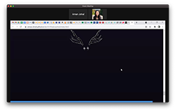
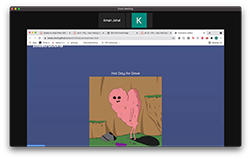
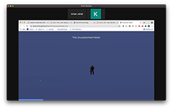
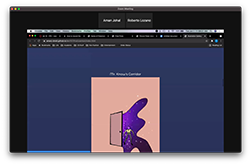
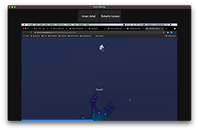

User Test 1
 User Test 2
 User Test 3
 User Test One
During my first user test, the user did not quite understand how the hover effect worked. She scrolled down the page and the mouse happened to be over the hover area. This leads me to think that I should include some sort of indication that I have that feature. I could include a little explanation on the landing page or perhaps I could include an animation around the photo border. I could have a pulsating border around the border so that it grabs the user's interest and then they mouse over. She also pointed out that I needed to include my email in the footer.
Things to improve: Hover indication
User Test Two
During my second user test, the user didn't have any trouble understanding how the page worked. At first, her cursor happened to be on the same x axis as the hover areas. She soon realized that her cursor was activating the image source change. She also thought it was a nice suprise that the images were interactive.
A good suggestion that I recieved was to include a 'back to top' button so that the user doesn't have to scroll all the way up. This will definitely help the user experience since allows the user to move quicker around the page.
Things to improve: Back to top button, gradient matching, remove 'Illustrations'
User Test Three
User number three liked the location of the scroll progress bar. Something that could be improved is the white space around the images before they are activated. I'm not sure how I would fix this since I can't resize the images too much because it would create a load issue. At first, the user didn't understand how the images were activated, however, by the time he got to the third image he realized. After thinking a little while, he decided that the surprise adds to the experience. I think it wouldn't hurt to write 'Scroll and Hover' instead of 'Scroll' on the landing page.
Things to improve: Improve explanation on landing page